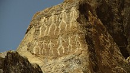

Azerbaijan officially the Republic of Azerbaijan,[c] is a transcontinental country located at the boundary of Eastern Europe and West Asia.[12] It is a part of the South Caucasus region and is bounded by the Caspian Sea to the east, Russia (Republic of Dagestan) to the north, Georgia to the northwest, Armenia and Turkey to the west, and Iran to the south. Baku is the capital and largest city. The Azerbaijan Democratic Republic proclaimed its independence from the Transcaucasian Democratic Federative Republic in 1918 and became the first secular democratic Muslim-majority state. In 1920, the country was incorporated into the Soviet Union as the Azerbaijan SSR.[13][14] The modern Republic of Azerbaijan proclaimed its independence on 30 August 1991,[15][16] shortly before the dissolution of the Soviet Union in the same year. In September 1991, the ethnic Armenian majority of the Nagorno-Karabakh region formed the self-proclaimed Republic of Artsakh.[17] The region and seven surrounding districts are internationally recognized as part of Azerbaijan, pending a solution to the status of Nagorno-Karabakh through negotiations facilitated by the OSCE, although it became de facto independent with the end of the First Nagorno-Karabakh War in 1994.[18][19][20][21] Following the Second Nagorno-Karabakh War in 2020, the seven districts and parts of Nagorno-Karabakh were returned to Azerbaijani control.[22] Azerbaijan is a unitary semi-presidential republic.[6] It is one of six independent Turkic states and an active member of the Organization of Turkic States and the TÜRKSOY community. Azerbaijan has diplomatic relations with 182 countries and holds membership in 38 international organizations,[23] including the United Nations, the Council of Europe, the Non-Aligned Movement, the OSCE, and the NATO PfP program. It is one of the founding members of GUAM, the CIS,[24] and the OPCW. Azerbaijan is also an observer state of the WTO. The vast majority of the country's population (97%) is nominally[25] Muslim,[26] but the constitution does not declare an official religion and all major political forces in the country are secularist. Azerbaijan is a developing country and ranks 91st on the Human Development Index. It has a high rate of economic development,[27] literacy,[28] and a low rate of unemployment.[29] However, the ruling New Azerbaijan Party, in power since 1993, has been accused of authoritarian leadership under the leadership of both Heydar Aliyev and his son Ilham Aliyev, and deteriorating the country's human rights record, including increasing restrictions on civil liberties, particularly on press freedom and political repression.[30]
According to a modern etymology, the term Azerbaijan derives from that of Atropates,[31][32] a Persian [33][34] satrap under the Achaemenid Empire, who was later reinstated as the satrap of Media under Alexander the Great.[35][36] The original etymology of this name is thought to have its roots in the once-dominant Zoroastrianism. In the Avesta's Frawardin Yasht ("Hymn to the Guardian Angels"), there is a mention of âterepâtahe ashaonô fravashîm ýazamaide, which literally translates from Avestan as "we worship the Further information: Atropatene, Caucasian Albania, and Azerbaijan (toponym) According to a modern etymology, the term Azerbaijan derives from that of Atropates,[31][32] a Persian[33][34] satrap under the Achaemenid Empire, who was later reinstated as the satrap of Media under Alexander the Great.[35][36] The original etymology of this name is thought to have its roots in the once-dominant Zoroastrianism. In the Avesta's Frawardin Yasht ("Hymn to the Guardian Angels"), there is a mention of âterepâtahe ashaonô fravashîm ýazamaide, which literally translates from Avestan as "we worship the fravashi of the holy Atropatene".[37] The name "Atropates" itself is the Greek transliteration of an Old Iranian, probably Median, compounded name with the meaning "Protected by the (Holy) Fire" or "The Land of the (Holy) Fire".[38] The Greek name was mentioned by Diodorus Siculus and Strabo. Over the span of millennia, the name evolved to Āturpātākān (Middle Persian), then to Ādharbādhagān, Ādhorbāygān, Āzarbāydjān (New Persian) and present-day Azerbaijan.[39] The name Azerbaijan was first adopted for the area of the present-day Republic of Azerbaijan by the government of Musavat in 1918,[40] after the collapse of the Russian Empire, when the independent Azerbaijan Democratic Republic was established. Until then, the designation had been used exclusively to identify the adjacent region of contemporary northwestern Iran,[41][42][43][44] while the area of the Azerbaijan Democratic Republic was formerly referred to as Arran and Shirvan.[45] On that basis Iran protested the newly adopted country name.[46] During Soviet rule, the country was also spelled in Latin from the Russian transliteration as Azerbaydzhan (Russian: Азербайджа́н).[47] The country's name was also spelled in Cyrillic script from 1940 to 1991 as Азәрбајҹан.
The earliest evidence of human settlement in the territory of Azerbaijan dates back to the late Stone Age and is related to the Guruchay culture of Azykh Cave. [48] The Sasanian Empire turned Caucasian Albania into a vassal state in 252, while King Urnayr officially adopted Christianity as the state religion in the 4th century.[51] Despite Sassanid rule, Albania remained an entity in the region until the 9th century, while fully subordinate to Sassanid Iran, and retained its monarchy. Despite being one of the chief vassals of the Sasanian emperor, the Albanian king had only a semblance of authority, and the Sasanian marzban (military governor) held most civil, religious, and military authority.[52] In the first half of the 7th century, Caucasian Albania, as a vassal of the Sasanians, came under nominal Muslim rule due to the Muslim conquest of Persia. The Umayyad Caliphate repulsed both the Sasanians and Byzantines from the South Caucasus and turned Caucasian Albania into a vassal state after Christian resistance led by King Javanshir was suppressed in 667. The power vacuum left by the decline of the Abbasid Caliphate was filled by numerous local dynasties such as the Sallarids, Sajids, and Shaddadids. At the beginning of the 11th century, the territory was gradually seized by the waves of Oghuz Turks from Central Asia, who adopted a Turkoman ethnonym at the time.[53] The first of these Turkic dynasties established was the Seljuk Empire, which entered the area now known as Azerbaijan by 1067.[54] The pre-Turkic population that lived on the territory of modern Azerbaijan spoke several Indo-European and Caucasian languages, among them Armenian[55][56][57][58][59] and an Iranian language, Old Azeri, which was gradually replaced by a Turkic language, the early precursor of the Azerbaijani language of today.[60] Some linguists have also stated that the Tati dialects of Iranian Azerbaijan and the Republic of Azerbaijan, like those spoken by the Tats, are descended from Old Azeri.[61][62] Locally, the possessions of the subsequent Seljuk Empire were ruled by Eldiguzids, technically vassals of the Seljuk sultans, but sometimes de facto rulers themselves. Under the Seljuks, local poets such as Nizami Ganjavi and Khaqani gave rise to a blossoming of Persian literature on the territory of present-day Azerbaijan.[63][64] The local dynasty of the Shirvanshahs became a vassal state of Timur's empire and assisted him in his war with the ruler of the Golden Horde Tokhtamysh. Following Timur's death, two independent and rival states emerged: Qara Qoyunlu and Aq Qoyunlu. The Shirvanshahs returned, maintaining for numerous centuries to come a high degree of autonomy as local rulers and vassals as they had done since 861. In 1501, the Safavid dynasty of Iran subdued the Shirvanshahs and gained its possessions. In the course of the next century, the Safavids converted the formerly Sunni population to Shia Islam,[65][66][67] as they did with the population in what is modern-day Iran.[68] The Safavids allowed the Shirvanshahs to remain in power, under Safavid suzerainty, until 1538, when Safavid king Tahmasp I (r. 1524–1576) completely deposed them, and made the area into the Safavid province of Shirvan. The Sunni Ottomans briefly managed to occupy parts of present-day Azerbaijan as a result of the Ottoman–Safavid War of 1578–1590; by the early 17th century, they were ousted by Safavid Iranian ruler Abbas I (r. 1588–1629). In the wake of the demise of the Safavid Empire, Baku and its environs were briefly occupied by the Russians as a consequence of the Russo-Persian War of 1722–1723. Despite brief intermissions such as these by Safavid Iran's neighboring rivals, the land of what is today Azerbaijan remained under Iranian rule from the earliest advent of the Safavids up to the course of the 19th century.[69][70] Modern history Main articles: Russo-Persian Wars, Treaty of Gulistan, and Treaty of Turkmenchay See also: Azerbaijan Democratic Republic, Azerbaijan SSR, and Operation Edelweiss After the Safavids, the area was ruled by the Iranian Afsharid dynasty. After the death of Nader Shah (r. 1736–1747), many of his former subjects capitalized on the eruption of instability. Numerous self-ruling khanates with various forms of autonomy[71][72][73][74][75] emerged in the area. The rulers of these khanates were directly related to the ruling dynasties of Iran and were vassals and subjects of the Iranian shah.[76] The khanates exercised control over their affairs via international trade routes between Central Asia and the West.[77] Thereafter, the area was under the successive rule of the Iranian Zands and Qajars.[78] From the late 18th century, Imperial Russia switched to a more aggressive geo-political stance towards its two neighbors and rivals to the south, namely Iran and the Ottoman Empire.[79] Russia now actively tried to gain possession of the Caucasus region which was, for the most part, in the hands of Iran.[80] In 1804, the Russians invaded and sacked the Iranian town of Ganja, sparking the Russo-Persian War of 1804–1813.[81] The militarily superior Russians ended the Russo-Persian War of 1804–1813 with a victory.[82] Despite the Russian conquest, throughout the entire 19th century, preoccupation with Iranian culture, literature, and language remained widespread amongst Shia and Sunni intellectuals in the Russian-held cities of Baku, Ganja and Tiflis (Tbilisi, now Georgia).[93] Within the same century, in post-Iranian Russian-held East Caucasia, an Azerbaijani national identity emerged at the end of the 19th century.[94] After the collapse of the Russian Empire during World War I, the short-lived Transcaucasian Democratic Federative Republic was declared, constituting the present-day republics of Azerbaijan, Georgia, and Armenia. It was followed by the March Days massacres[95][96] that took place between 30 March and 2 April 1918 in the city of Baku and adjacent areas of the Baku Governorate of the Russian Empire.[97] When the republic dissolved in May 1918, the leading Musavat party declared independence as the Azerbaijan Democratic Republic (ADR), adopting the name of "Azerbaijan" for the new republic; a name that prior to the proclamation of the ADR was solely used to refer to the adjacent northwestern region of contemporary Iran.[41][42][43] The ADR was the first modern parliamentary republic in the Muslim world.[13][98][99] Among the important accomplishments of the Parliament was the extension of suffrage to women, making Azerbaijan the first Muslim nation to grant women equal political rights with men.[98] Another important accomplishment of ADR was the establishment of Baku State University, which was the first modern-type university founded in the Muslim East.[98] The pre-Turkic population that lived on the territory of modern Azerbaijan spoke several Indo-European and Caucasian languages, among them Armenian[55][56][57][58][59] and an Iranian language, Old Azeri, which was gradually replaced by a Turkic language, the early precursor of the Azerbaijani language of today.[60] Some linguists have also stated that the Tati dialects of Iranian Azerbaijan and the Republic of Azerbaijan, like those spoken by the Tats, are descended from Old Azeri.[61][62] Locally, the possessions of the subsequent Seljuk Empire were ruled by Eldiguzids, technically vassals of the Seljuk sultans, but sometimes de facto rulers themselves. Under the Seljuks, local poets such as Nizami Ganjavi and Khaqani gave rise to a blossoming of Persian literature on the territory of present-day Azerbaijan.[63][64] The local dynasty of the Shirvanshahs became a vassal state of Timur's empire and assisted him in his war with the ruler of the Golden Horde Tokhtamysh. Following Timur's death, two independent and rival states emerged: Qara Qoyunlu and Aq Qoyunlu. The Shirvanshahs returned, maintaining for numerous centuries to come a high degree of autonomy as local rulers and vassals as they had done since 861. In 1501, the Safavid dynasty of Iran subdued the Shirvanshahs and gained its possessions. In the course of the next century, the Safavids converted the formerly Sunni population to Shia Islam,[65][66][67] as they did with the population in what is modern-day Iran.[68] The Safavids allowed the Shirvanshahs to remain in power, under Safavid suzerainty, until 1538, when Safavid king Tahmasp I (r. 1524–1576) completely deposed them, and made the area into the Safavid province of Shirvan. The Sunni Ottomans briefly managed to occupy parts of present-day Azerbaijan as a result of the Ottoman–Safavid War of 1578–1590; by the early 17th century, they were ousted by Safavid Iranian ruler Abbas I (r. 1588–1629). In the wake of the demise of the Safavid Empire, Baku and its environs were briefly occupied by the Russians as a consequence of the Russo-Persian War of 1722–1723. Despite brief intermissions such as these by Safavid Iran's neighboring rivals, the land of what is today Azerbaijan remained under Iranian rule from the earliest advent of the Safavids up to the course of the 19th century.[69][70] Modern history Main articles: Russo-Persian Wars, Treaty of Gulistan, and Treaty of Turkmenchay See also: Azerbaijan Democratic Republic, Azerbaijan SSR, and Operation Edelweiss After the Safavids, the area was ruled by the Iranian Afsharid dynasty. After the death of Nader Shah (r. 1736–1747), many of his former subjects capitalized on the eruption of instability. Numerous self-ruling khanates with various forms of autonomy[71][72][73][74][75] emerged in the area. The rulers of these khanates were directly related to the ruling dynasties of Iran and were vassals and subjects of the Iranian shah.[76] The khanates exercised control over their affairs via international trade routes between Central Asia and the West.[77] Thereafter, the area was under the successive rule of the Iranian Zands and Qajars.[78] From the late 18th century, Imperial Russia switched to a more aggressive geo-political stance towards its two neighbors and rivals to the south, namely Iran and the Ottoman Empire.[79] Russia now actively tried to gain possession of the Caucasus region which was, for the most part, in the hands of Iran.[80] In 1804, the Russians invaded and sacked the Iranian town of Ganja, sparking the Russo-Persian War of 1804–1813.[81] The militarily superior Russians ended the Russo-Persian War of 1804–1813 with a victory.[82] Despite the Russian conquest, throughout the entire 19th century, preoccupation with Iranian culture, literature, and language remained widespread amongst Shia and Sunni intellectuals in the Russian-held cities of Baku, Ganja and Tiflis (Tbilisi, now Georgia).[93] Within the same century, in post-Iranian Russian-held East Caucasia, an Azerbaijani national identity emerged at the end of the 19th century.[94] After the collapse of the Russian Empire during World War I, the short-lived Transcaucasian Democratic Federative Republic was declared, constituting the present-day republics of Azerbaijan, Georgia, and Armenia. It was followed by the March Days massacres[95][96] that took place between 30 March and 2 April 1918 in the city of Baku and adjacent areas of the Baku Governorate of the Russian Empire.[97] When the republic dissolved in May 1918, the leading Musavat party declared independence as the Azerbaijan Democratic Republic (ADR), adopting the name of "Azerbaijan" for the new republic; a name that prior to the proclamation of the ADR was solely used to refer to the adjacent northwestern region of contemporary Iran.[41][42][43] The ADR was the first modern parliamentary republic in the Muslim world.[13][98][99] Among the important accomplishments of the Parliament was the extension of suffrage to women, making Azerbaijan the first Muslim nation to grant women equal political rights with men.[98] Another important accomplishment of ADR was the establishment of Baku State University, which was the first modern-type university founded in the Muslim East.[98] The pre-Turkic population that lived on the territory of modern Azerbaijan spoke several Indo-European and Caucasian languages, among them Armenian[55][56][57][58][59] and an Iranian language, Old Azeri, which was gradually replaced by a Turkic language, the early precursor of the Azerbaijani language of today.[60] Some linguists have also stated that the Tati dialects of Iranian Azerbaijan and the Republic of Azerbaijan, like those spoken by the Tats, are descended from Old Azeri.[61][62] Locally, the possessions of the subsequent Seljuk Empire were ruled by Eldiguzids, technically vassals of the Seljuk sultans, but sometimes de facto rulers themselves. Under the Seljuks, local poets such as Nizami Ganjavi and Khaqani gave rise to a blossoming of Persian literature on the territory of present-day Azerbaijan.[63][64] The local dynasty of the Shirvanshahs became a vassal state of Timur's empire and assisted him in his war with the ruler of the Golden Horde Tokhtamysh. Following Timur's death, two independent and rival states emerged: Qara Qoyunlu and Aq Qoyunlu. The Shirvanshahs returned, maintaining for numerous centuries to come a high degree of autonomy as local rulers and vassals as they had done since 861. In 1501, the Safavid dynasty of Iran subdued the Shirvanshahs and gained its possessions. In the course of the next century, the Safavids converted the formerly Sunni population to Shia Islam,[65][66][67] as they did with the population in what is modern-day Iran.[68] The Safavids allowed the Shirvanshahs to remain in power, under Safavid suzerainty, until 1538, when Safavid king Tahmasp I (r. 1524–1576) completely deposed them, and made the area into the Safavid province of Shirvan. The Sunni Ottomans briefly managed to occupy parts of present-day Azerbaijan as a result of the Ottoman–Safavid War of 1578–1590; by the early 17th century, they were ousted by Safavid Iranian ruler Abbas I (r. 1588–1629). In the wake of the demise of the Safavid Empire, Baku and its environs were briefly occupied by the Russians as a consequence of the Russo-Persian War of 1722–1723. Despite brief intermissions such as these by Safavid Iran's neighboring rivals, the land of what is today Azerbaijan remained under Iranian rule from the earliest advent of the Safavids up to the course of the 19th century.[69][70] Modern history Main articles: Russo-Persian Wars, Treaty of Gulistan, and Treaty of Turkmenchay See also: Azerbaijan Democratic Republic, Azerbaijan SSR, and Operation Edelweiss After the Safavids, the area was ruled by the Iranian Afsharid dynasty. After the death of Nader Shah (r. 1736–1747), many of his former subjects capitalized on the eruption of instability. Numerous self-ruling khanates with various forms of autonomy[71][72][73][74][75] emerged in the area. The rulers of these khanates were directly related to the ruling dynasties of Iran and were vassals and subjects of the Iranian shah.[76] The khanates exercised control over their affairs via international trade routes between Central Asia and the West.[77] Thereafter, the area was under the successive rule of the Iranian Zands and Qajars.[78] From the late 18th century, Imperial Russia switched to a more aggressive geo-political stance towards its two neighbors and rivals to the south, namely Iran and the Ottoman Empire.[79] Russia now actively tried to gain possession of the Caucasus region which was, for the most part, in the hands of Iran.[80] In 1804, the Russians invaded and sacked the Iranian town of Ganja, sparking the Russo-Persian War of 1804–1813.[81] The militarily superior Russians ended the Russo-Persian War of 1804–1813 with a victory.[82] Despite the Russian conquest, throughout the entire 19th century, preoccupation with Iranian culture, literature, and language remained widespread amongst Shia and Sunni intellectuals in the Russian-held cities of Baku, Ganja and Tiflis (Tbilisi, now Georgia).[93] Within the same century, in post-Iranian Russian-held East Caucasia, an Azerbaijani national identity emerged at the end of the 19th century.[94] After the collapse of the Russian Empire during World War I, the short-lived Transcaucasian Democratic Federative Republic was declared, constituting the present-day republics of Azerbaijan, Georgia, and Armenia. It was followed by the March Days massacres[95][96] that took place between 30 March and 2 April 1918 in the city of Baku and adjacent areas of the Baku Governorate of the Russian Empire.[97] When the republic dissolved in May 1918, the leading Musavat party declared independence as the Azerbaijan Democratic Republic (ADR), adopting the name of "Azerbaijan" for the new republic; a name that prior to the proclamation of the ADR was solely used to refer to the adjacent northwestern region of contemporary Iran.[41][42][43] The ADR was the first modern parliamentary republic in the Muslim world.[13][98][99] Among the important accomplishments of the Parliament was the extension of suffrage to women, making Azerbaijan the first Muslim nation to grant women equal political rights with men.[98] Another important accomplishment of ADR was the establishment of Baku State University, which was the first modern-type university founded in the Muslim East.[98]
